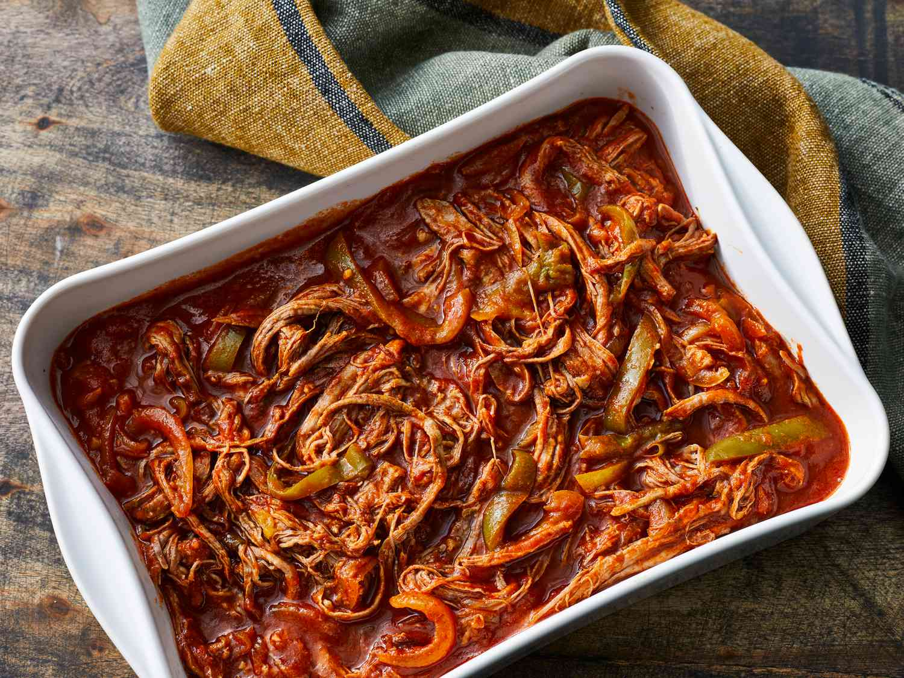

White rice's best friend
The flavor of this dish will take you directly to The Caribbean, especifically Cuba, where simplicity meets deep flavors that you will become obsessed with
Ingredients
- tablespoon vegetable oil
- 2 pounds beef flank steak
- 1 cup beef broth
- 1 (8 ounce) can tomato sauce
- 1 (6 ounce) can tomato paste
- 1 green bell pepper, seeded and sliced into strips
- 1 small onion, sliced
- 2 cloves garlic, chopped
- 1 teaspoon ground cumin
- 1 teaspoon chopped fresh cilantro
- 1 tablespoon olive oil
- 1 tablespoon white vinegar
Steps
- Heat vegetable oil in a large skillet over medium-high heat. Add flank steak and cook until browned, about 4 minutes per side.
- Transfer steak to a slow cooker; pour in beef broth and tomato sauce. Add tomato paste, bell pepper, onion, garlic, cumin, cilantro, olive oil, and vinegar; stir until well blended.
- Cover and cook on Low for up to 10 hours, or on High for 4 hours.
- Shred steak in the slow cooker with two forks.
- Served over white rice, with a side of black beans and fried sweet plantains. (That's what I recommend!)
Return to top
Return to main page